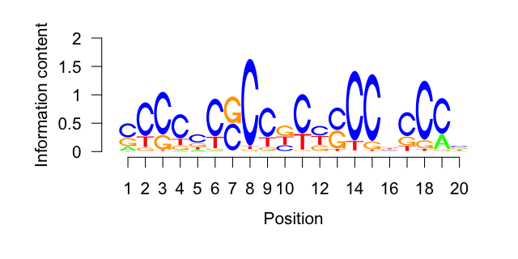
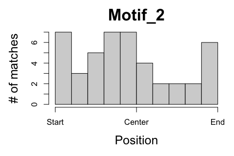

Package wrapper: rGADEM, de novo motif discovery
Jim Zhang
2016-08-26
Introduction
This is an R markdown template that implements main functionality of Bioconductor package rGADEM. Please read the package manual first for the background information and parameter options of using this package.
The main input data to this analysis is a set of DNA sequences, within which de novo motifs and their position weighted matrix (PWM) will be discovered. The DNA sequences can be provided as named character vector, an DNAStringSet object, or a set of genomic locations with their reference genome, such as BSgenome.Hsapiens.NCBI.GRCh38.
This analysis includes three major steps:
- The GADEM {rGADEM} function is used to discover de novo motifs from the DNA sequences and report the matches to the motifs
- The motifs and matches are summarized and visualized
- The motifs are re-matched to the DNA sequences using the matchPWM {Biostrings} function and a p value cutoff, to identify extra matches
1 Description
1.1 Project
rGADAM wrapper
2 Motif discovery
A total of 81 sequences are used by the GADEM {rGADEM} function to discovery de novo motifs (see Table 1). The function call uses the following parameters:
- Seed PWM (Spwm): no
- Number of EM steps (numEM): 80
- P value cutoff of matches (pValue): 2e-04
- Mask low-complexity sequences (maskR): yes
- Maximal number of motifs allowed (nmotifs): 25
| Min. | 1st Qu. | Median | Mean | 3rd Qu. | Max. | |
|---|---|---|---|---|---|---|
| Length (bp) | 201.00 | 201.00 | 201.00 | 201.00 | 201.00 | 201.00 |
| GC (%) | 25.87 | 46.27 | 56.22 | 56.88 | 69.65 | 86.57 |
3 Motif summary
The GADEM {rGADEM} function discovers 3 motif(s) from the DNA sequences. For each motif, the output includes reports its consensus sequence, PWM, and detailed information about all matches.
| Name | Consensus | GC_Percent | Num_Base | Num_Match | Num_Seq |
|---|---|---|---|---|---|
| Motif_1 | sCCsCCssCCyCnsCCkCCn | 81.50 | 20 | 60 | 34 |
| Motif_2 | nTTTmAnwwwwnwwyTTyn | 26.42 | 19 | 39 | 26 |
| Motif_3 | GGnnsvsnynykCCTsrCwkCCCAGm | 64.55 | 26 | 21 | 12 |
| Matching position | PWM Logo |
|---|---|
|  | |
|  | |
 |
4 Motif re-match
The motifs discovered previously are re-matched to the DNA sequences by applying the following steps on each motif:
- Calculate average base frequency of all DNA sequences
- Draw 100000 random sequences of the same length as the motif
- Calculate the matching scores of the random sequences to get a background distribution
- Use the cutoff of empirical p value (0.005) to the cutoff of matching score
- Re-match the motif to the sequences using the cutoff of matching score from the last step
| Motif | Len_Motif | Match_Per_Kb | Num_Match | Num_Seq | Strand… | Min_Score | Mean_Score | Max_Score |
|---|---|---|---|---|---|---|---|---|
| Motif_1 | 20 | 10.6259 | 173 | 61 | 39.31 | 67.1 | 76.9514 | 93.8 |
| Motif_2 | 19 | 10.0731 | 164 | 59 | 51.22 | 65.0 | 73.1335 | 90.5 |
| Motif_3 | 26 | 9.8274 | 160 | 65 | 44.38 | 64.2 | 70.0950 | 97.5 |

5 Appendix
Check out the RoCA home page for more information.
5.1 Reproduce this report
To reproduce this report:
Find the data analysis template you want to use and an example of its pairing YAML file here and download the YAML example to your working directory
To generate a new report using your own input data and parameter, edit the following items in the YAML file:
- output : where you want to put the output files
- home : the URL if you have a home page for your project
- analyst : your name
- description : background information about your project, analysis, etc.
- input : where are your input data, read instruction for preparing them
- parameter : parameters for this analysis; read instruction about how to prepare input data
Run the code below within R Console or RStudio, preferablly with a new R session:
if (!require(devtools)) { install.packages('devtools'); require(devtools); }
if (!require(RCurl)) { install.packages('RCurl'); require(RCurl); }
if (!require(RoCA)) { install_github('zhezhangsh/RoCAR'); require(RoCA); }
CreateReport(filename.yaml); # filename.yaml is the YAML file you just downloaded and editedIf there is no complaint, go to the output folder and open the index.html file to view report.
5.2 Session information
## R version 3.2.2 (2015-08-14)
## Platform: x86_64-apple-darwin13.4.0 (64-bit)
## Running under: OS X 10.10.5 (Yosemite)
##
## locale:
## [1] en_US.UTF-8/en_US.UTF-8/en_US.UTF-8/C/en_US.UTF-8/en_US.UTF-8
##
## attached base packages:
## [1] grid stats4 parallel stats graphics grDevices utils
## [8] datasets methods base
##
## other attached packages:
## [1] BSgenome.Hsapiens.NCBI.GRCh38_1.3.1000
## [2] Agri_0.0.0.9000
## [3] rGADEM_2.20.0
## [4] seqLogo_1.36.0
## [5] BSgenome_1.38.0
## [6] rtracklayer_1.30.4
## [7] Biostrings_2.38.4
## [8] XVector_0.10.0
## [9] GenomicFeatures_1.22.13
## [10] AnnotationDbi_1.32.3
## [11] Biobase_2.30.0
## [12] GenomicRanges_1.22.4
## [13] GenomeInfoDb_1.6.3
## [14] IRanges_2.4.8
## [15] S4Vectors_0.8.11
## [16] BiocGenerics_0.16.1
## [17] htmlwidgets_0.7
## [18] DT_0.2
## [19] awsomics_0.0.0.9000
## [20] yaml_2.1.13
## [21] rmarkdown_1.0
## [22] knitr_1.13
## [23] RoCA_0.0.0.9000
## [24] RCurl_1.95-4.8
## [25] bitops_1.0-6
## [26] devtools_1.12.0
##
## loaded via a namespace (and not attached):
## [1] Rcpp_0.12.6 highr_0.6
## [3] formatR_1.4 futile.logger_1.4.3
## [5] futile.options_1.0.0 tools_3.2.2
## [7] zlibbioc_1.16.0 biomaRt_2.26.1
## [9] digest_0.6.10 jsonlite_1.0
## [11] evaluate_0.9 memoise_1.0.0
## [13] RSQLite_1.0.0 DBI_0.4-1
## [15] withr_1.0.2 stringr_1.0.0
## [17] XML_3.98-1.4 BiocParallel_1.4.3
## [19] lambda.r_1.1.9 magrittr_1.5
## [21] Rsamtools_1.22.0 htmltools_0.3.5
## [23] GenomicAlignments_1.6.3 SummarizedExperiment_1.0.2
## [25] stringi_1.1.1END OF DOCUMENT